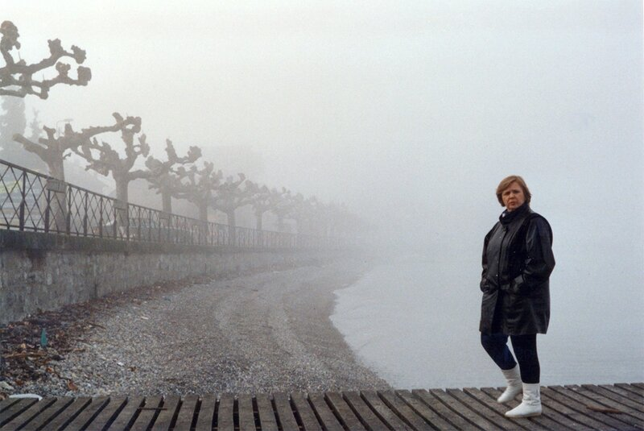
Сегодня мы могли бы отметить День рождения Лены все вместе… Не судьба.
Несколько старых фотографий из другой жизни.
На развалинах Баальбека.
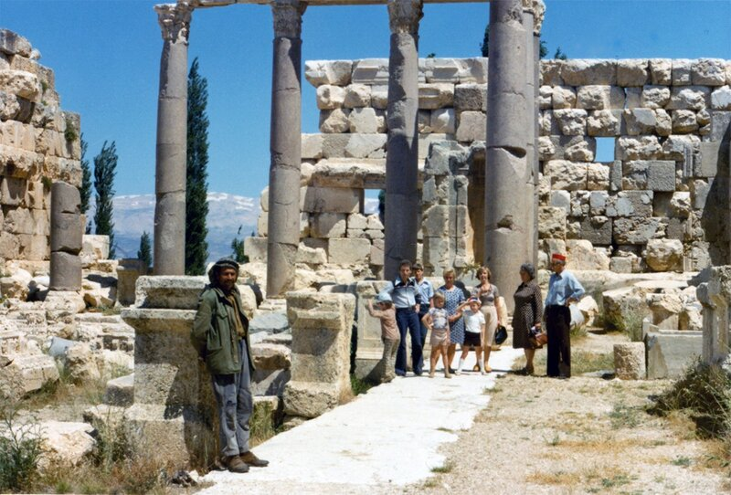
У озера Рица 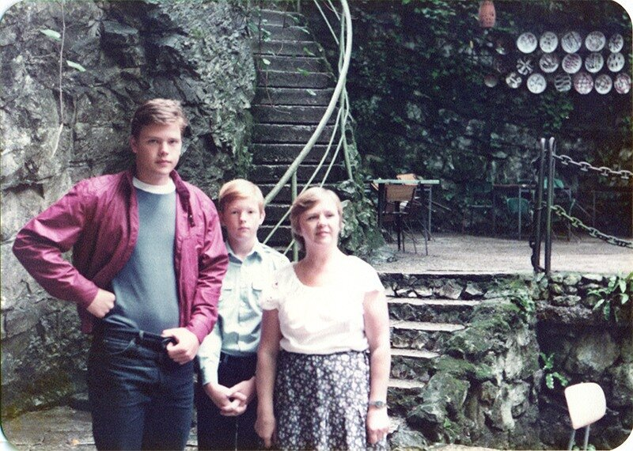
В Багдаде все спокойно 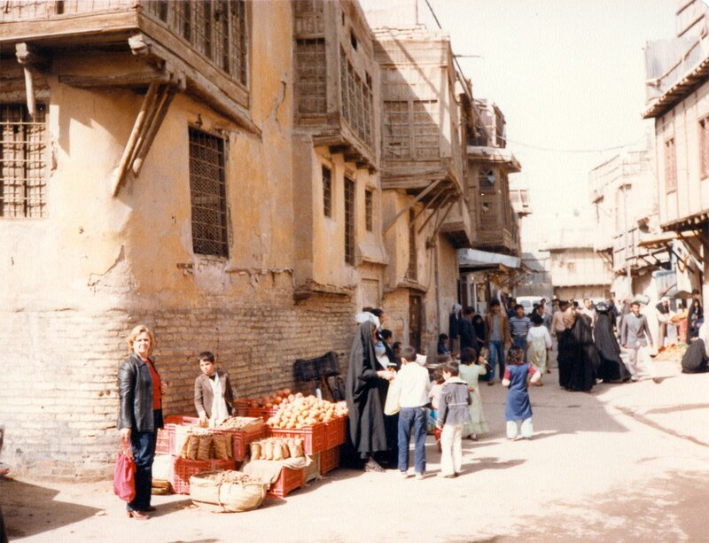
Весеннее утро в Багдаде 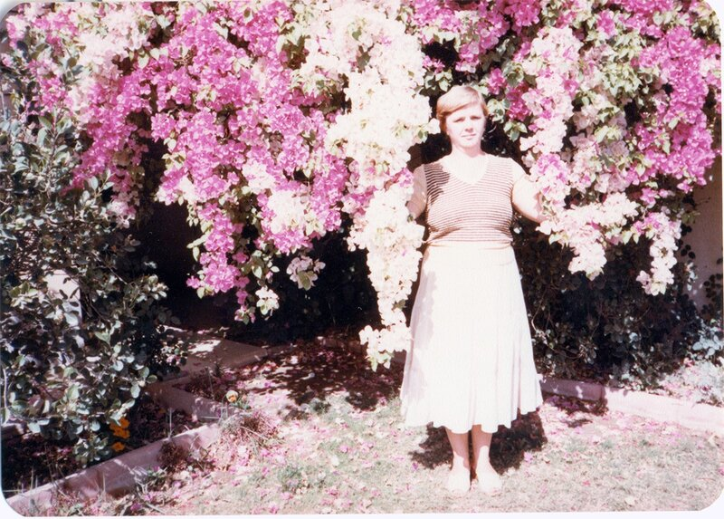
Война, война 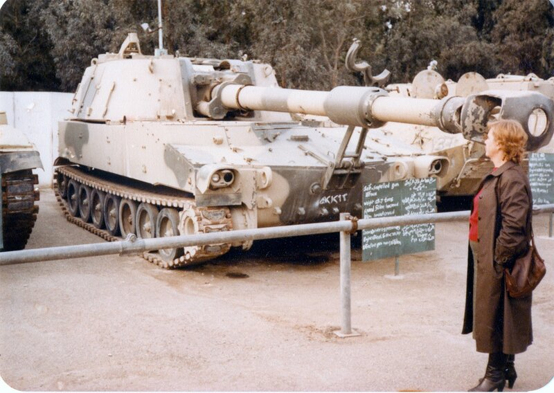
У истоков Рейна. 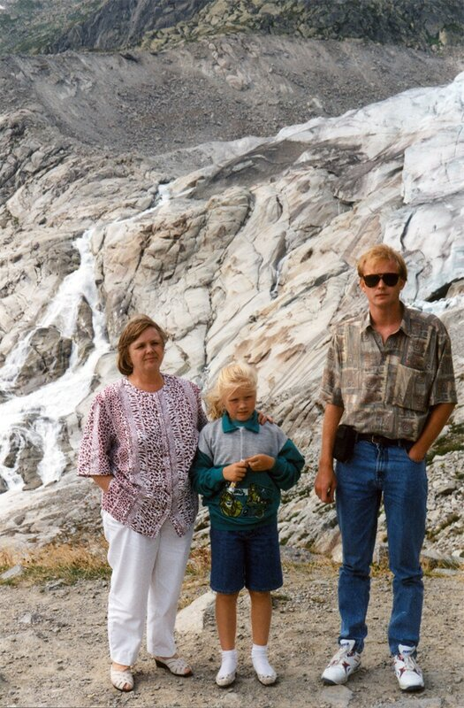
У подножия Монблана 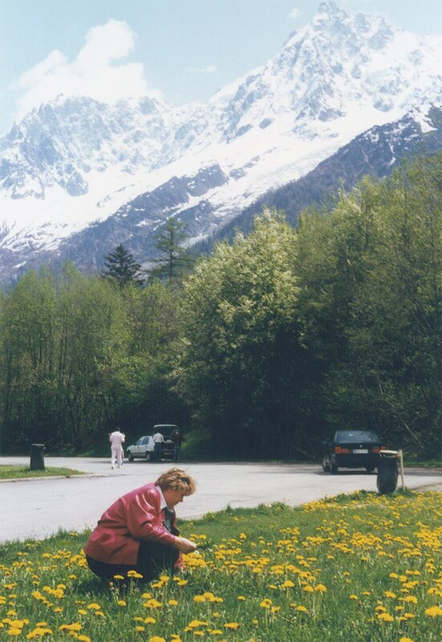
И на его вершине 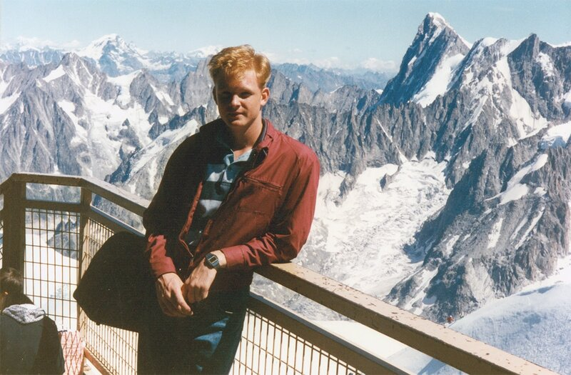
Крыша Европы 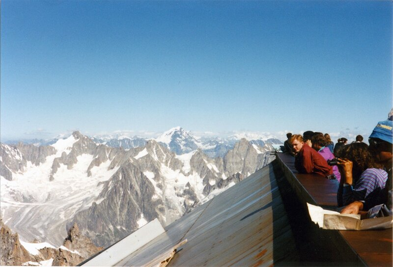
Где-то в Европе. 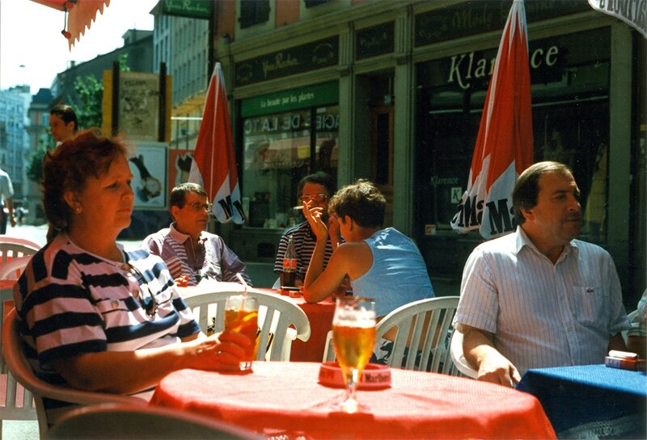
В Альпах. Знаменитый альпийский сыр. 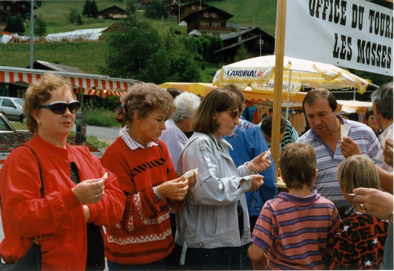
Чертов мост 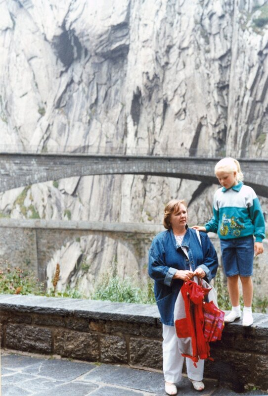
И памятник суворовским чудо-богатырям 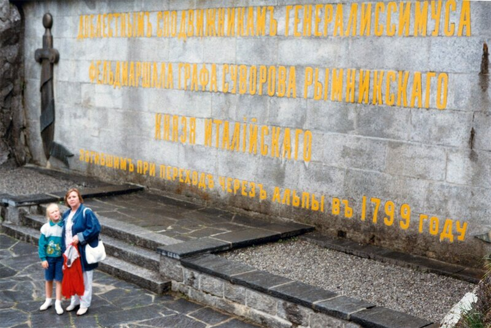
Шийонский узник 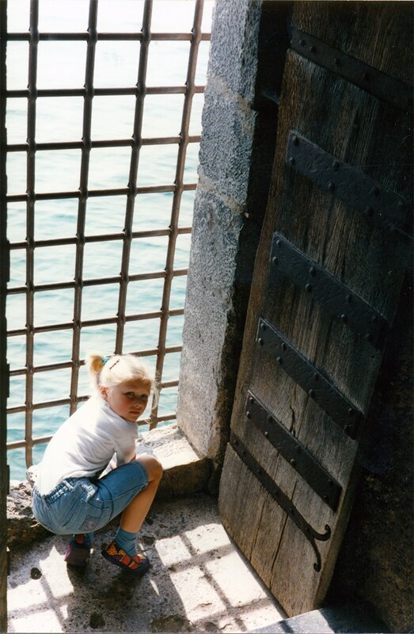
Устали 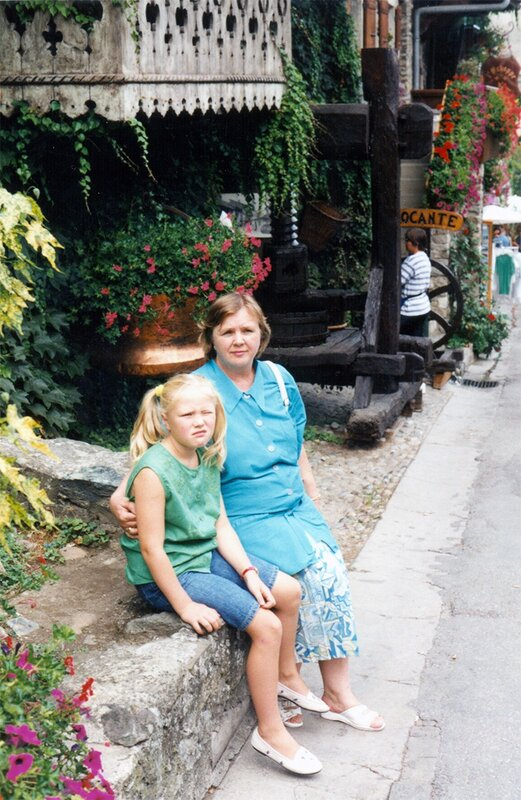
В оранжерее. Или в райском саду? 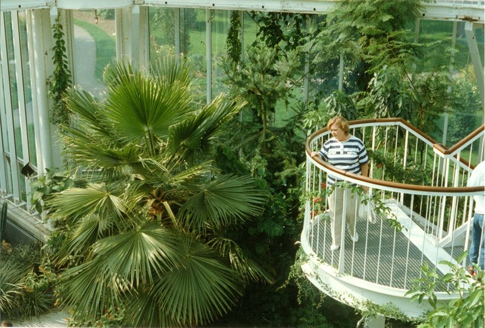
Чудесный город Женева. 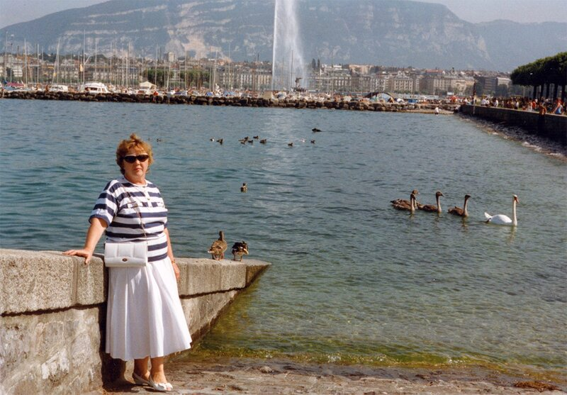
Беседе мудрых людей лучше не мешать. 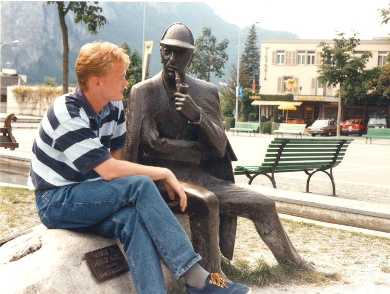
Пригласили московского гостя к Чарли Чаплину. Посмеялись 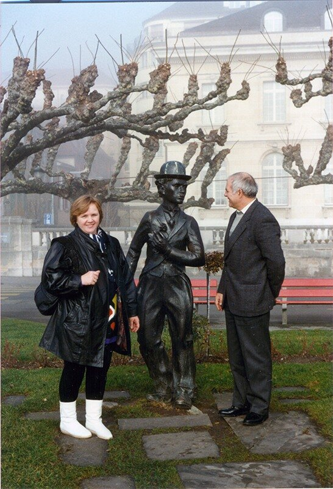
Камень Байрона. Здесь написана третья песнь Паломничества Чайльд-Гарольда. Именно об этих местах:
Так что ж, не лучше ль край избрать пустынный
И для земли - земле всю жизнь отдать
Над Роною, над синею стремниной,
Над озером, которое, как мать,
Не устает ее струи питать, -
Как мать, кормя малютку дочь иль сына,
Не устает их нежить и ласкать.
Блажен, чья жизнь с Природою едина,
Кто чужд ярму раба и трону властелина.
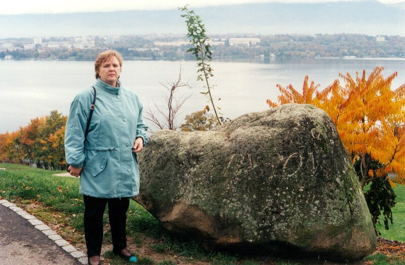
Кто жизнь в ее деяниях постиг,
Кем долгий срок в земной юдоли прожит,
Кто ждать чудес и верить в них отвык,
Чье сердце жажда славы не тревожит,
И ни любовь, ни ненависть не гложет,
Тому остался только мир теней,
Где мысль уйти в страну забвенья может,
Где ей, гонимой, легче и вольней
Меж зыбких образов, любимых с давних дней.